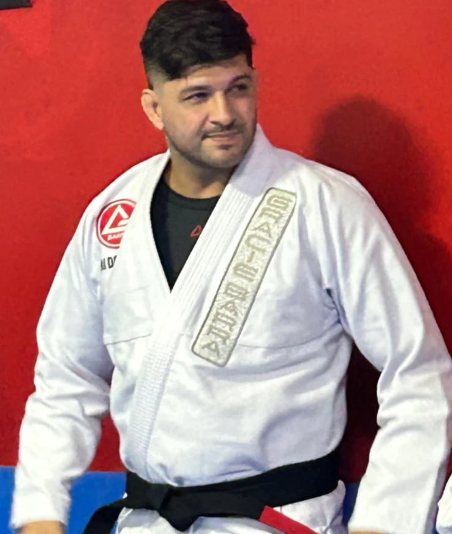

D
Fundador · Professor titular
Professor Danilo
Foi o Danilo quem trouxe a Gracie Barra para a Vila Leopoldina. Começou no Jiu-Jitsu em 2013 e recebeu a faixa preta em junho de 2024. Professor de Educação Física, une o currículo oficial Gracie Barra ao conhecimento de treino e preparação do corpo, para que cada aluno evolua com técnica e segurança.
Está no tatame de segunda a sexta: às segundas, quartas e sextas, do primeiro ao último treino do dia, e às terças e quintas, na turma das 20h.
2013Início no Jiu-Jitsu
2024Faixa preta
Ed. FísicaProfessor formado
GraduaçãoFaixa preta